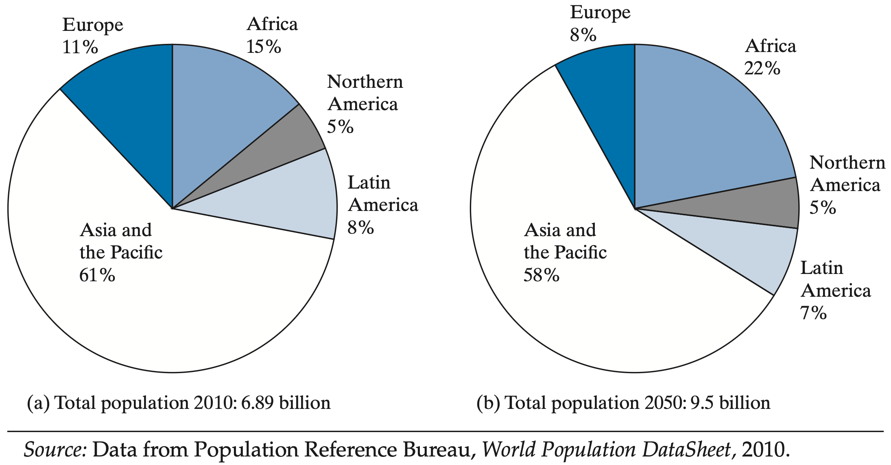
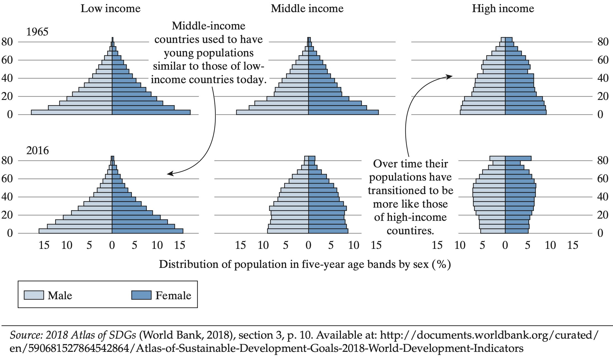
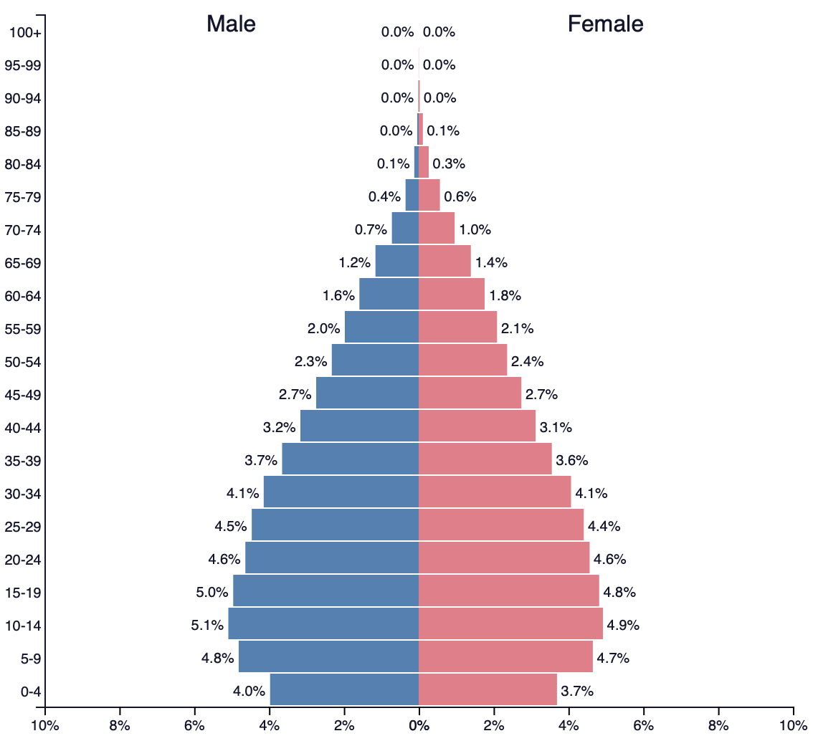
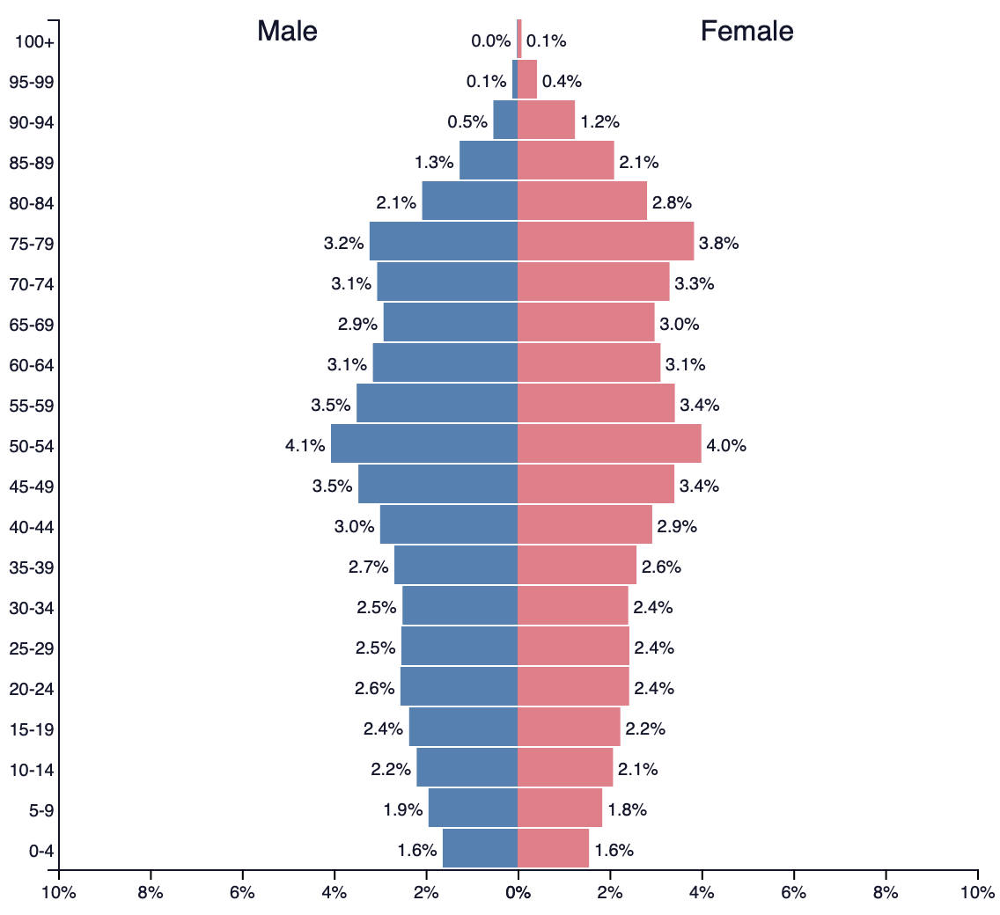
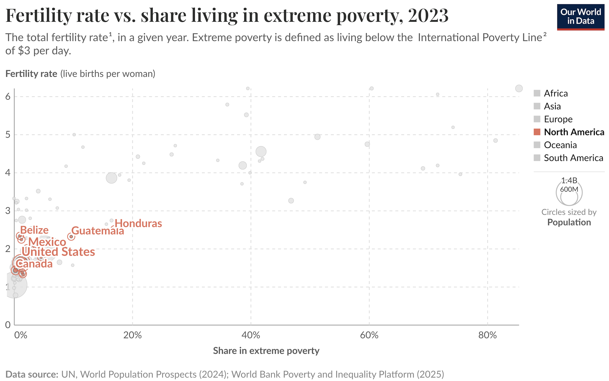
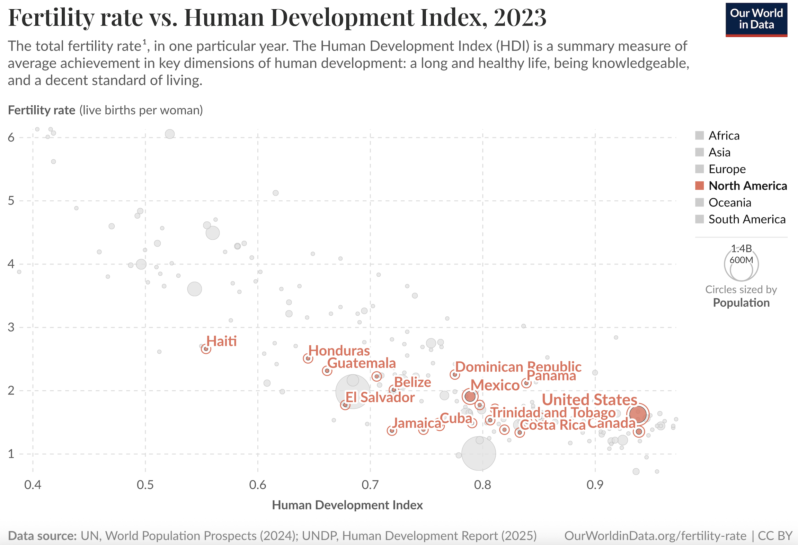
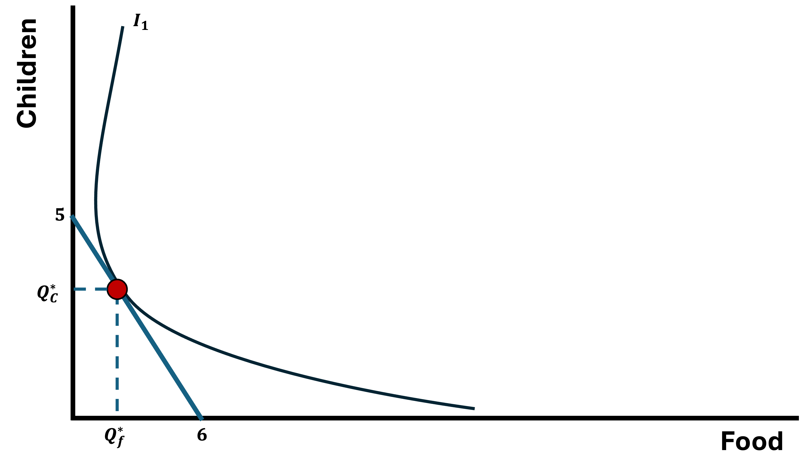

Population
EC 390 - Development Economics
2025
Theories of Population Growth
History of Population Growth

Which Areas Are Growing the Fastest?
Population Distributions
China and the One Child Policy
Population Differences
Phillipines (2025)

Costa Rica (2025)

Japan (2025)

Age Structure and Dependency Burden
Every country, in every stage of development, has a dependency burden
- Definition: The ratio of non-working aged individuals to working individuals
- In Developed Nations, population growth has slowed.
- There is a large dependency burden due to the large number of retirees relative to working age individuals
- In Developing Nations, poopulation growth is usually high.
- There is a large dependency burden due to the large number of children relative to working age individuals
Poverty and Fertility
North America
Poverty and Fertility
Africa

Poverty and Fertility
What is the relationship between poverty and fertility?
North America
Africa
Positive Correlation but causality is unclear
Development and Fertility
Not surprisingly development and fertility are negatively correlated

North America

Africa
Consequences of High Fertility
The latest empirical research points out that high fertility is a concern with possible severe consequences
- Fast population growth tends to lower per capita economic growth
- Increased poverty and inequality
- Reduced education
- Health outcomes (risky pregnancies and dangers in frequent births)
- Food shortages
- Environmental issues (increased pollution)
- International migration
Microeconomics of Fertility Decisions
Microeconomic Theory of Fertility
Empirical evidence to support the idea that economic conditions cause fertility rates to be high
- Families have a limited amount of resources, which can be used to support children or parents (a budget)
- The more children parents decide to have, the less resources parents have for themselves
- Parents have a tradeoff to consider: children provide benefits, but they also have a cost
Microeconomic Theory of Fertility
Consider the following example
- Suppose a household has an income of $30
- There are only two goods to consider:
- Food and Children
- Food is a normal good with price equal to $5
- Children are an inferior good with price equal to $6
- The household has preferences over food and children, which we represent with indifference curves
Indifference Curves

Indifference Curves (Higher Utility)

Finding the Budget Line
We know the household has a total of $30 to spend and they can spend it either on Food or Children
- If they buy only Food, they can afford 6 units \(\dfrac{30}{5} = 6\)
- If they “buy” only Children, they can afford 5 kids \(\dfrac{30}{6} = 5\)
- With these two points, we can draw the budget line
Budget Line
Optimal Choice
Higher Budget
Now let’s say that the households income increaes to $60
- The price of both goods remains the same
- Now, if they buy only Food, they can afford 12 units \(\dfrac{60}{5} = 12\)
- And, if they “buy” only Children, they can afford 10 kids \(\dfrac{60}{6} = 10\)
- With these two points, we can draw the new budget line
Higher Budget

Optimized Choice (Again)

Microeconomics of Fertility Decisions
- When income increased, the household was better off buying more food and fewer children
- The household got wealthier, and kids are an inferior good
Children as an Inferior Good?
This is generally what we observe
- As income per capita increases, birth rates fall
- Parents face a trade-off:
- There is a finite amount of resources
- Example Income is limited
- Do you have a lot of children and invest very little in each?
- Do you have few kids and invest a lot in each?
- This is known as the “Quality vs Quantity Trade-Off”
Demographic Transition
Fertility Rates Eventually Decline
All contemporary developed nations have more or less passed through the same four stages of modern population history
Stage 01. High Birth Rates and High Death Rates
Stage 02. High Birth Rates with Decline in Death Rates (Transition)
Stage 03. Declining Birth Rates and Low Death Rates
Stage 04. Low Birth Rates and Low Death Rates
Demographic Transtion Stages
All contemporary developed nations have more or less passed through the same four stages of modern population history
Stage 01. High Birth Rates and High Death Rates
- Populations grow very slowly because both birth rates and death rates are high and roughly balance each other
- High mortality comes from poor sanitation, limited medical care, and frequent famines or epidemics
Stage 02. High Birth Rates with Decline in Death Rates (Transition)
Stage 03. Declining Birth Rates and Low Death Rates
Stage 04. Low Birth Rates and Low Death Rates
Demographic Transtion Stages
All contemporary developed nations have more or less passed through the same four stages of modern population history
Stage 01. High Birth Rates and High Death Rates
Stage 02. High Birth Rates with Decline in Death Rates (Transition)
- Increased access to medicine, sanitation, and stronger food supply sources reduce death rates sharply
- Birth rates remain high for a while, causing a population boom or “demographic explosion”
Stage 03. Declining Birth Rates and Low Death Rates
Stage 04. Low Birth Rates and Low Death Rates
Demographic Transtion Stages
All contemporary developed nations have more or less passed through the same four stages of modern population history
Stage 01. High Birth Rates and High Death Rates
Stage 02. High Birth Rates with Decline in Death Rates (Transition)
Stage 03. Declining Birth Rates and Low Death Rates
As living standards rise, education and urbanization lead families to have fewer children
Population growth slows and stabilizes, creating the conditions typical of modern developed economies
Stage 04. Low Birth Rates and Low Death Rates
Demographic Transtion Stages
All contemporary developed nations have more or less passed through the same four stages of modern population history
Stage 01. High Birth Rates and High Death Rates
Stage 02. High Birth Rates with Decline in Death Rates (Transition)
Stage 03. Declining Birth Rates and Low Death Rates
Stage 04. Low Birth Rates and Low Death Rates
Societies experience stable or even shrinking populations as fertility may fall below replacement levels
Aging populations and slower growth become key social and economic challenges
EC390, Lecture 07 | Population